Searching Strategies
Searching for elements in a data structure is one of the fundamental problems for every computer scientist and programmer will encounter many times. Given an array A of integers, consider the problem of determine if a certain number x apprears in the array or not. Below is an illustration, where the first line is the indexes into the array and the second line is the value at the given index. Consider how to determine if 41 is the array or not.
A naive approach to this problem is to do a linear search. That is to go through each of the elements one by one, comparing each of the elements if they are equal to x. Pseudocode for this simple algorithm can be seen here:
It is easy to see that this approach will use linear time, denoted O(n) where n is the number of elements in the array. By analyzing the worst case where the element is last in the array or not in the array at all, we can see that the algorithm will look exactly once at every element in the array. Comparing each element to x can be done in constant time.
There must be a better way to search through an array. First of all, is there a way we can terminate the algorithm early? Note that the order of the array does not matter in order to determine if an element is in the array or not. Hence, we can sort the array in non-decreasing order, then utilize this fact to know when the element is definitely not in the array.

When looking for 20 in the sorted array, it is clear that the element cannot be at any index after 22, hence we can terminate the algorithm early. However, asymptotically, this will not give a better running time, as the element you are looking for could be larger than any element in the array, causing each element to be analyzed.
A better approach - Binary Search
Reusing the idea of sorting the array, a better algorithm can be devised using binary search or logarithmic search. Instead of starting from one end of the array, start at the middle of the sorted array and check if the element is equal, smaller, or larger than that element. If it is equal, the algorithm can simple return true, while if the element is smaller, the algorithm can be called recursively on the right part of the array. Similarly, if the element is larger, then the algorithm can run recursively on the left part of the array. This will cut the problem in half in each step!
The pseudocode for this algorithm is illustrated here:
Each time the algorithm will cut the problem in half. This means the first iteration will handle a array of size n, using constant time to compare x to the middle element. The second iteration will look at half the array, hence a problem of size n/2, continuing until the array is empty. Each iteration of the algorithm takes constant time, and in worst case ⌊lg n⌋ iterations is needed. This means the overall running time of the algorithm is O(lg n). This is the fastest known technique to find elements in the general problem membership problem.